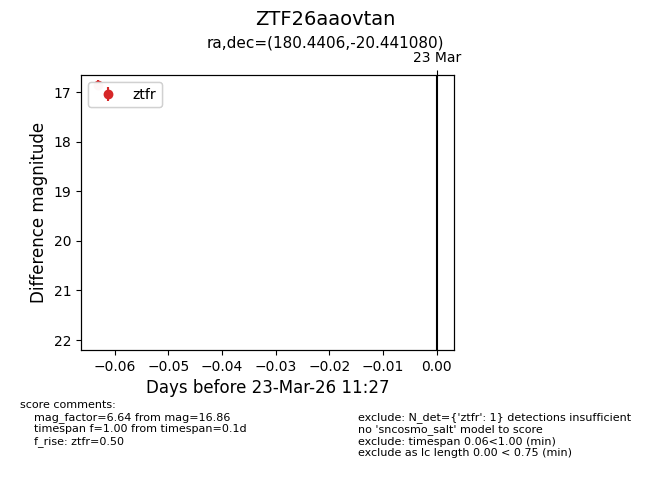
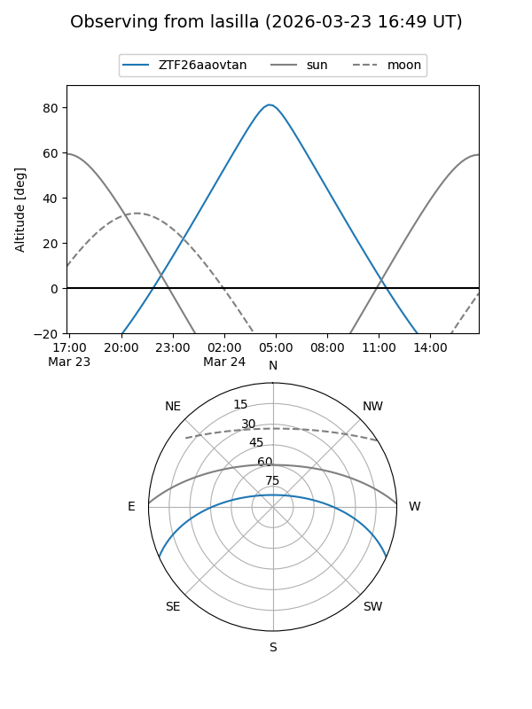
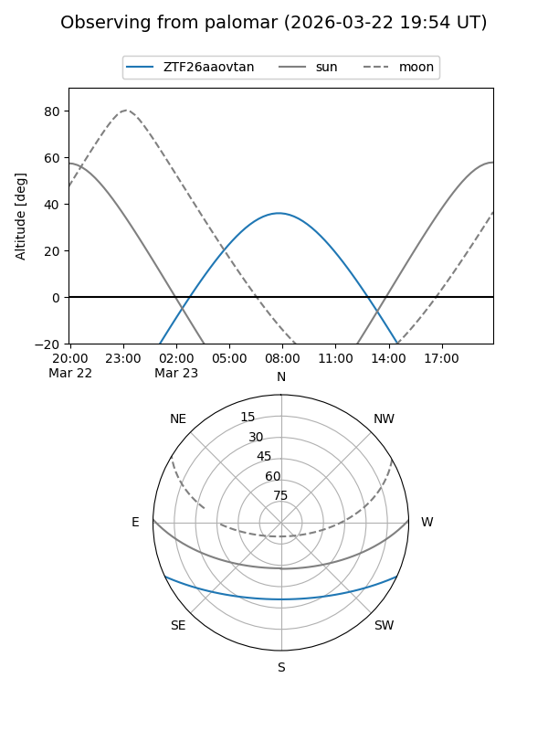

ZTF26aaovtan
Target ZTF26aaovtan at 2026-03-23 11:29
Aliases and brokers:
FINK: link
Lasair: link
ALeRCE: link
alt names
ZTF26aaovtan (ztf,fink_ztf)
Coordinates:
equatorial (ra, dec) = 180.4406,-20.44108
equatorial (HMS+DMS) = 12:01:45.74,-20:26:27.89
galactic (l, b) = (287.4614,+40.93363)
Flags:
Photometry:
last ztfr=16.86
1 ztfr detections
Lightcurve

Visibility


Additional plots